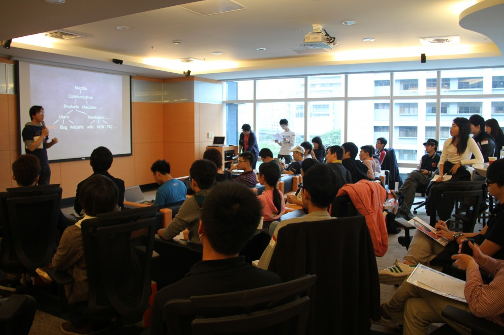
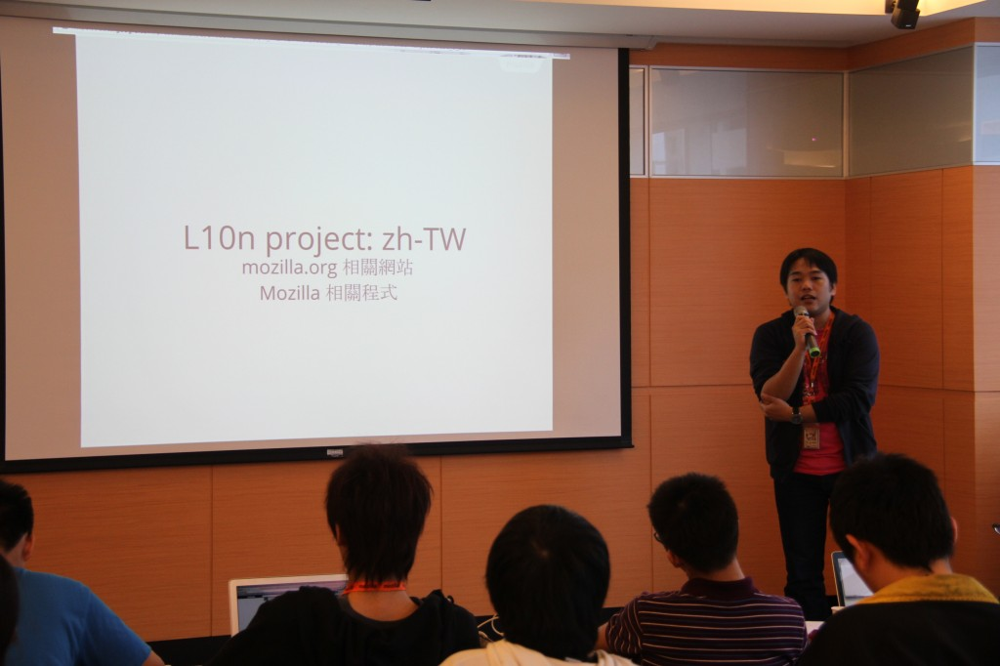
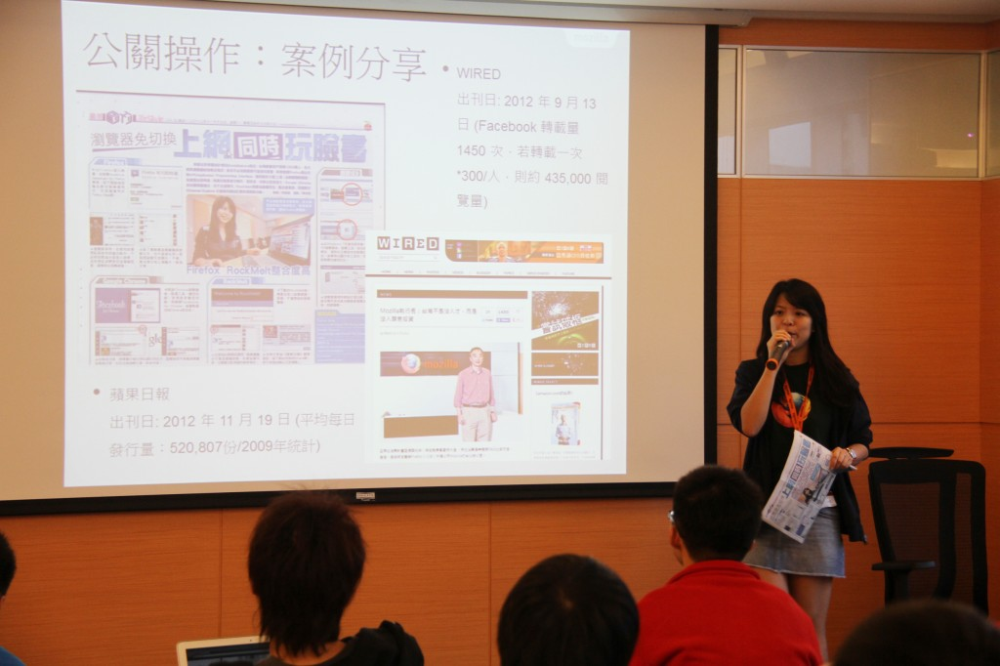
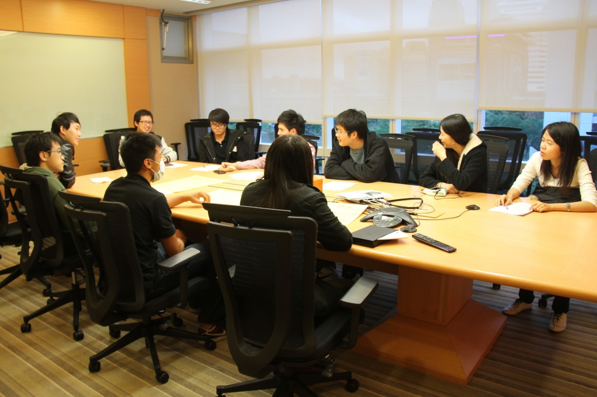
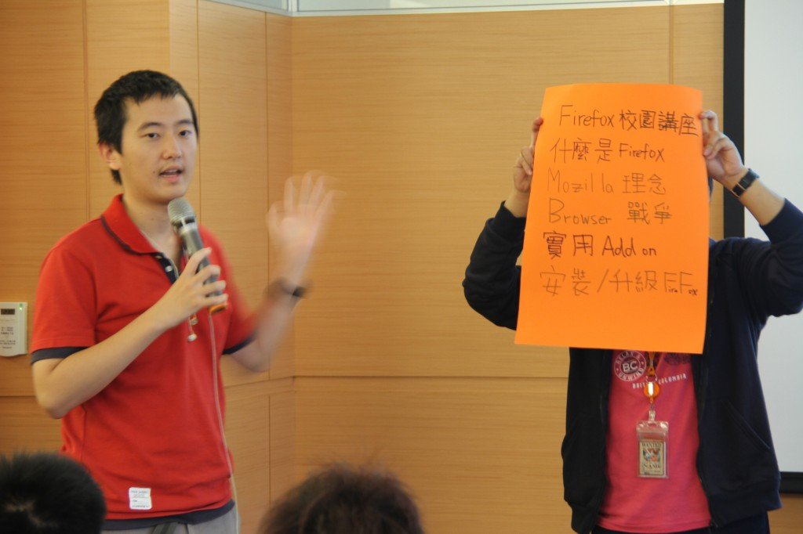
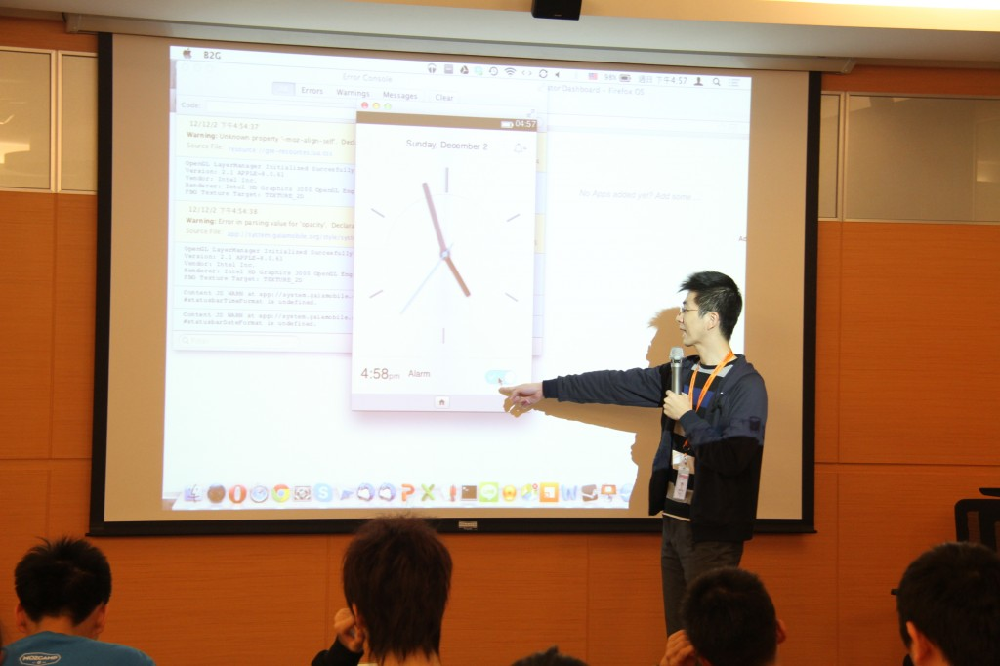
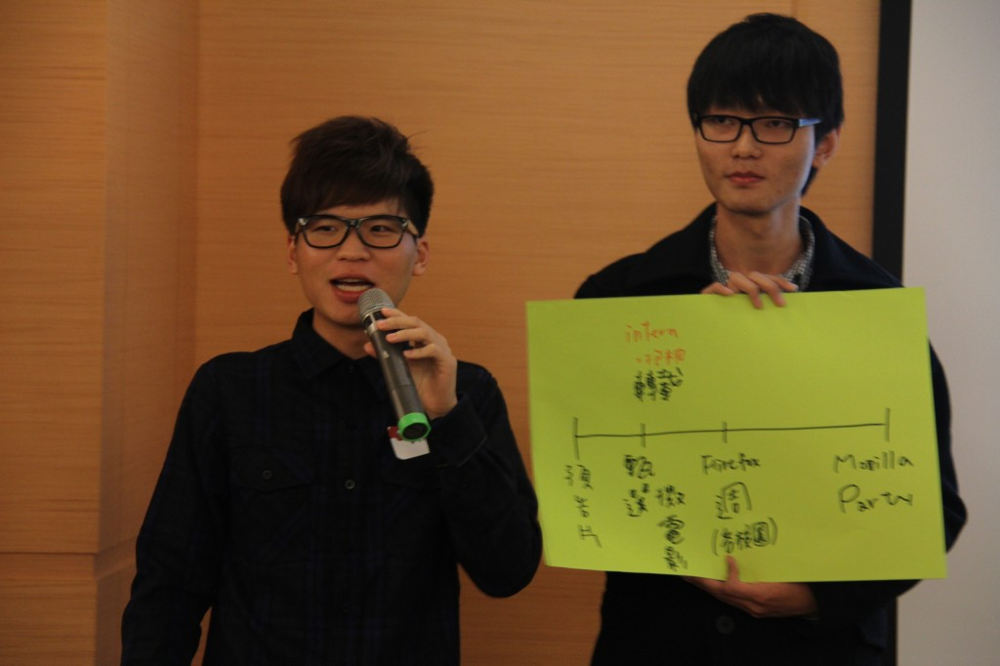
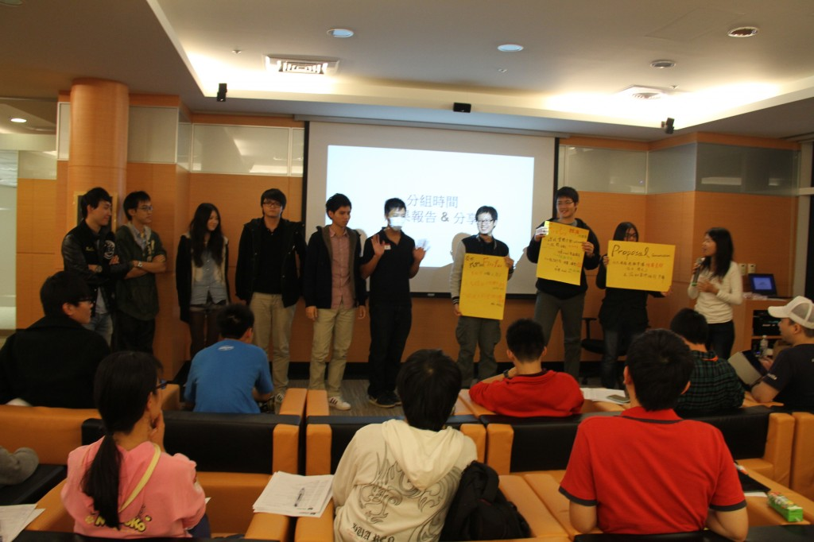
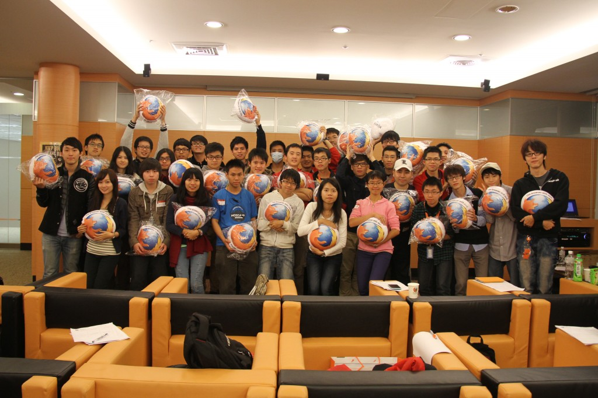

「第一屆 Firefox 校園大使 訓練營」整天的活動緊接著來到 12/2 的下午，下午搶先登場的是由 Bob 以及兩位社群成員 Ernest、Thomasy 帶來的入門專案介紹，讓身為 Firefox 校園大使的台下觀眾不但能多瞭解 Mozilla，更清楚參與各專案的方法。

有請 Ernest 介紹 SUMO！

接著由 Thomasy 說明何謂 Mentoring Bugs

Bob 代班介紹 L10n & 資訊工具應用~

經過短暫的休息時間後，課程來到 Marketing in Mozilla – 行銷/公關案例分享，想知道 Mozilla 和其他企業有何不同嗎？

公關案例分享

最精彩的分組時間又來了！本次題目是：把 Firefox 傳到校園各個角落！開始啦～

來自各校的 Firefox 校園大使熱烈分組討論中，團隊力量大！

各組各有自己的強項～
或是圍成一個大桌討論～

緊接著最具創意、活力、熱情的成果分享來囉！

全組一起上來報告氣勢超強！

分享實況～

今天最後一個講題是 Mozilla Taiwan 最重點的專案：Firefox OS 介紹！有請資深軟體工程師 Cervantes 和大家面對面討論。
Firefox OS 內建超帥氣時鐘

聽了一整天的豐富內容，現在要提出任期內的提案規劃了！

各組都十分投入



大合照來囉！

感謝 Firefox 校園大使參與本次的活動，以下附上當天投影片的連結：
- 入門專案 SUMO